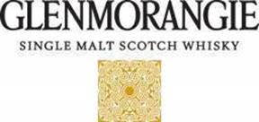
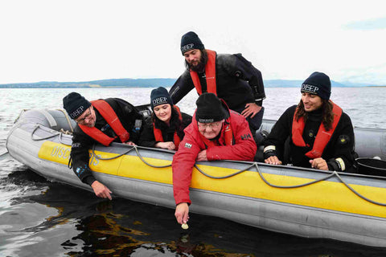
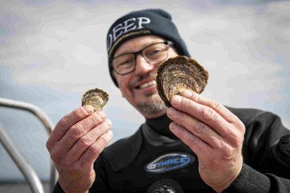
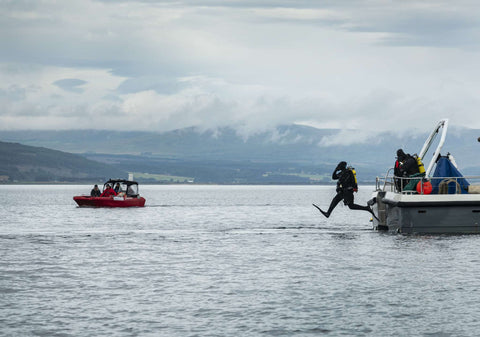

The Importance of Oyster Restoration
Chapter 4 – A Milestone Achieved
August 2021
At a time where there is increasing concern about climate change there are rays of hope and good work is being carried out.
With that in mind, we have decided to reproduce a recent press release made by the Dornoch Environmental Enhancement Project (DEEP). See this article for background on the project and our role in it.
We are proud that we and our oysters have played a key role in this achievement, and we continue to take an active part in the project. We are also grateful for all of your support as it helps us to continue working on these and other restoration efforts.
And so without further ado.

DORNOCH FIRTH ENHANCEMENT PROJECT REACHES 20,000 OYSTERS MILESTONE
— Pioneering research uncovers hidden value of native oysters in carbon storage —
Glenmorangie Distillery and a team of scientists from Heriot-Watt University have reached a significant milestone in the Dornoch Environmental Enhancement Project (DEEP), focused on restoring a sustainable native oyster reef in the Dornoch Firth.
August 2021 marks the completion of 20,000 native European oysters being returned to the Dornoch Firth, where they became extinct more than 100 years ago as a result of overfishing. This phase’s success will pave the way for the restoration of the reef, after years of research, planning and monitoring.

As part of the DEEP project, the team is investigating findings that suggest that the restored oyster reef habitat has the capacity to act as a long-term carbon store. Researchers are now researching the carbon value of the calcium carbonate produced in the shell of native oysters, a key component in estimating the total value of the reef’s carbon storage potential.
Conscious of the organic waste discharge from the Distillery in Tain, Glenmorangie has long understood the need for a water quality enhancement strategy while supporting the marine environment at its brand home on the banks of the Dornoch Firth.
DEEP began, as part of the Distillery’s wider sustainability strategy, in 2014, with partners from Heriot-Watt University and supported by the Marine Conservation Society with a shared vision to create a sustainable reef of 4 million native oysters.
The oysters will play a key role in purifying the water which contains organic by-products from the Distillery and the local area, with one oyster able to purify up to 200 litres of water a day. The Distillery’s anaerobic digestion (AD) plant commissioned in 2017 has already successfully reduced the Distillery’s biological load on the firth by over 95%, and in a Distillery first, the oyster reef is expected to act in tandem to soak up the remaining 5%. In addition to the water purification role the oyster reef also creates a haven for marine life and will help to mitigate the effects of climate change.

Professor Bill Sanderson, at Heriot-Watt University said: “DEEP has allowed us to demonstrate the many benefits of restoration of long-lost reefs, and carbon storage is yet another exciting outcome of the research for the project.”
“We are still uncovering exactly how much of a game changer this can be but we’re increasingly focusing our research on delving deeper into the role of the oyster reef as a carbon store.”
“It’s great to think that the Dornoch Firth can contribute as a global exemplar for helping to mitigate climate change, especially as we run up to COP26 being held here in Scotland.”
Professor John Baxter, Chair of DEEP’s Independent Research Advisory Panel comprising scientists from the IUCN, The Marine Biological Association U.K. and the Native Oyster Restoration Alliance, added: “The DEEP research is greatly improving our understanding of the dynamics of oyster reef restoration. It is also helping to set the standard in all aspects of marine habitat restoration work such as biosecurity and monitoring. As we embark on the UN Decade on Ecosystem Restoration (2021-2030) DEEP is a prime example of the multiple benefits (i.e. habitat improvement, biodiversity enhancement and climate change mitigation) that can come from such initiatives.”
Thomas Moradpour, CEO and President at The Glenmorangie Company commented: “DEEP continues to deliver leading research into vital areas that affect us all as we continue on the journey to a ‘net zero’ world.”
“Today’s businesses must all play their part, not just to protect the environment in which they operate, but to enhance it, leaving it in better shape for the next generation.”
In the process of restoring the reef, Glenmorangie and Heriot-Watt University have worked with rural Scottish oyster growers and brood stock providers across Scotland. In a government-funded report, it was found that for every aquaculture job created in the Highlands, there was a gross value added of about £68k, demonstrating that breeding oysters for reef restoration adds extra economic value.

The Dornoch Firth is a Special Area of Conservation and a ‘SSSI’ (a Site of Special Scientific Interest). NatureScot has been a key adviser on the project together with Marine Scotland.
Ends